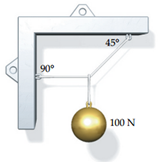
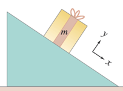

\(\star\)Auf dem Mond beträgt die Gravitationsfeldstärke nur ein Sechstel der Gravitationsfeldstärke auf der Erde. Ein Astronaut, dessen Gewicht auf der Erde 600 N beträgt, betritt die Mondoberfläche. Wie gross ist dort seine Masse?
Die Masse des Astronauten bleibt unverändert bei rund 60 kg. Auf der
Erde gibt das eine Ge-wichtskraft von 600 N, auf dem Mond von 100
N.
Die Gewichtskraft (Anziehung) ist anders, die Masse bleibt aber
gleich.
\(\star\star\)Zwei Personen A und B
stehen beweglich auf Skateboards und halten sich an dem gleichen
straffen Seil fest. Plötzlich zieht A kräftig an dem Seil.
A wiegt \(m_A\) = 80 kg und B wiegt
\(m_B\) = 50 kg. A wird mit \(a_A\) = 1.5 m/s\(^2\) beschleunigt.
Welche Strecke legt B in der ersten halben Sekunde zurück?
Dafür brauchen Sie die Beschleunigung von B.
Diese erhalten Sie aus der Kraft über das dritte Newtonsche
Gesetz.
Danach lösen Sie die Bewegungsleichung für B.
Bewegungsgesetz (Newton 2): F = a m
Wechselwirkungsgesetz (Newton 3): Kraft = - Gegenkraft.
Die Kraft auf A erhalten wir aus Newton 2: \(F_A=a_Am_A=1.5\cdot80=120N\)
Wir nehmen diese Kraft willkürlich als positiv (in Richtung der
x-Koordinate) an. Damit sind alle anderen Vorzeichen festgelegt.
Wegen Newton 3 wirkt auf B dieselbe, entgegengesetzt gerichtete Kraft:
\(F_B=-F_A=-a_Am_A=-1.5\cdot80=-120N\)
Aus der Kraft auf B erhalten wir seine Beschleunigung mit Newton
2:
\(a_B=\frac{F_B}{m_B}=-a_A\frac{m_A}{m_B}\)
Aus der Beschleunigung von B erhalten wir seine Geschwindigkeit und den
Ort als Funktion der Zeit: \[a_B = -a_A
\frac{m_A}{m_B} = \text{konstant}\] \[v_B = \int a_B \, dt = a_B t + v_0\] \[x_B = \int v_B \, dt = \frac{1}{2} a_B t^2 + v_0
t + x_0\] Wir nehmen an, das Skateboard sei am Anfang in Ruhe und
am Punkt x = 0.
Wir berechnen für diesen Fall wie oben das Integral der Geschwindigkeit
über die Zeit, aber diesmal zwischen den beiden Grenzen \(t_0\) = 0 s und \(t_1\) = 0.5 s.
\[x_B = \int_{t_0}^{t_1} v(t) \, dt =
\frac{1}{2} a_B t^2 \Big|_{t_0}^{t_1} = \frac{1}{2} a_B (t_1^2 - t_0^2)
= -\frac{1}{2} a_A \frac{m_A}{m_B} 0.5^2 = 0.3\, \text{m}\]
Der schwere A legt eine kleinere Strecke zurück, seine Beschleunigung
ist kleiner. Die beiden treffen sich nicht in der Mitte, sondern im
gemeinsamen Schwerpunkt.
\(\star\)(a) Ein Auto fährt mit
einer konstanten Beschleunigung \(a\) =
4 m/s\(^2\) an und beschleunigt 15 s
lang. Welche Geschwindigkeit hat es dann?
(b) Welchen Weg hat es nach den 15 s zurückgelegt?
(c) Wie lange muss es insgesamt fahren, um 1 km zurückzulegen, wenn es
die nach 15 s erreichte Geschwindigkeit beibehält?
Zeichnen Sie Ort, Geschwindigkeit und Beschleunigung gegen die Zeit.
Rechnen Sie von a auf v und s.
Für (c) unterteilen Sie die beiden Wege und berechnen Sie noch die Zeit,
die für den verbleibenden Weg bei konstantem v erforderlich ist.
(a) Die Beschleunigung a ist konstant
\[v(15) = \int_{0}^{15} a \, dt = a[15 - 0] =
4 \, \text{m/s}^2 \times 15 \, \text{s} = 60 \, \text{m/s} = 216 \,
\text{km/h}\]
(b) Die Wegstrecke ist das Integral über der Geschwindigkeit über die
Zeit
\[\Delta x = \int_{0}^{15 \, \mathrm{s}} v \,
dt = \frac{1}{2} a \left[ (15 \, \mathrm{s})^2 - (0 \, \mathrm{s})^2
\right] = \frac{1}{2} \cdot 4 \, \mathrm{m/s^2} \cdot (15 \,
\mathrm{s})^2 = 450 \, \mathrm{m}\]
(c) Noch zurückzulegende Strecke: 1000 m – 450 m = 550 m
Die Geschwindigkeit ist konstant, dann ist \[t = \frac{\Delta x}{v} = \frac{650 \,
\mathrm{m}}{60 \, \mathrm{m/s}} = 9.2 \, \mathrm{s}\] und die
gesamte Fahrzeit \[t_{\text{tot}} = 15
\mathrm{s} + 9.2 \mathrm{s} = 24.2 \, \mathrm{s}\] (d)
Diagramme
Ort: Ansteigende Parabel bis 15 s, danach mit konstanter Steigung
weiter. Es gibt keinen Knick in der Kurve, die Gerade schliesst glatt an
die Parabel an.
Geschwindigkeit: Ansteigende Gerade während 15 s bis 60 m/s, danach
horizontal.
Beschleunigung: Konstant bei 4 m/s bis zu 15 s, danach null.
\(\star\star\star\)420 m vor einem
Schnellzug 1, der mit einer Geschwindigkeit von \(v_1\)=100 km/h fährt, taucht plötzlich nach
einer Kurve eine in dieselbe Richtung mit \(v_2\)=18 km/h fahrende einzelne Lokomotive
2 auf.
Wie gross muss die Bremsbeschleunigung von 1 sein, damit eine Kollision
verhindert wird?
Überlegen Sie, was es bedeutet, dass gerade keine Kollsion
stattfindet.
Genau, Zug 1 muss, wenn er Zug 2 eingeholt hat, genau mit dessen
Geschwindigkeit fahren.
Damit bekommen Sie zwei Bedingungen, wenn Sie Ort und Geschwindigkeit
der beiden Züge gleichsetzen. Daraus lässt sich a berechnen.
Alternative können Sie auch das Bezugssystem wechseln und mit der Lok
mitfahren. Das erleichtert die Aufgabe enorm und Sie müssen nur noch die
Frage beantworten: Wie gross muss die Beschleunigung sein, damit der
Schnellzug von 82 km/h innerhalb von 420 m zum Stehen kommt?
Lösungsweg 1 (allgemein): Gleicher Ort und gleiche
Geschwindigkeit
Wir schreiben die Bewegungsgleichung beider Züge auf und wissen, dass am
Schluss beide am gleichen Ort sind und die gleiche Geschwindigkeit
haben
Wir setzen Zug 1 auf die Anfangsposition \(x_{01}=0\) und Zug 2 auf \(x_{02}=\)420 m
Zug 1 bremst konstant: \[a_1 = \text{const}
\mathrm{,} \quad v_1 = a_1 t + v_{01} \mathrm{,} \quad x_1 = \frac{1}{2}
a_1 t^2 + v_{01} t + x_{01} = \frac{1}{2} a_1 t^2 + v_{01}
t\]
Zug 2 fährt mit konstanter Geschwindigkeit:
\(a_2=0\mathrm{,} v_2=v_{02},x_2=v_{02}
t+x_{02}\)
Wenn die Züge sich treffen, sind sie zur gleichen Zeit am gleichen
Ort:
\[x_1 = x_2 \mathrm{:} \quad \frac{1}{2} a
t^2 + v_{01} t = v_{02} t + x_{02}\]und haben die gleiche
Geschwindigkeit, damit die Kollision gerade verhindert wird \[v_1 = v_2 \mathrm{:} \quad a_1 t + v_{01} =
v_{02}\]
Wir haben damit zwei Gleichungen für die beiden Unbekannten a und t.
Dieses Problem können wir lösen, indem wir z.B. die zweite Gleichung
nach a auflösen und in die ersten einsetzen:
\[\frac{1}{2} \frac{(v_{02} - v_{01})}{t}
\cdot t^2 + v_{01} t = v_{02} t + x_{02}\]Das können wir nach
\(t\) auflösen:\[t = \frac{x_{02}}{\left( \frac{1}{2}(v_{02} -
v_{01}) + v_{01} - v_{02} \right)} = \frac{2x_{02}}{v_{01} -
v_{02}}\]Mit dieser Zeit erhalten wir die Beschleunigung \(a_1\) als:\[a_1
= \frac{(v_{02} - v_{01})}{t} = \frac{(v_{02} - v_{01})(v_{01} -
v_{02})}{2x_{02}} = -\frac{{(\Delta v)}^2}{2x_{02}}\] Das ist –
nicht überraschend – das gleiche Ergebnis wie beim zweiten
Lösungsweg.
Dort bewegen wir uns mit der Geschwindigkeit des zweiten Zuges, die
Geschwindigkeit \(v_0\) unten
entspricht dem \(\Delta v\) hier.
Lösungsweg 2 (speziell): Wechsel des
Bezugssystems
Wir haben ein Problem, das uns davonfährt.
Wir setzen unser Koordinatensystem deshalb in den vorausfahrenden Zug
2
Jetzt müssen wir den nachfolgenden Zug 1 auf einer Strecke von 420 m
abbremsen.
Weil wir das Bezugssystem gewechselt haben, fährt nur noch der
nachfolgende Zug von uns aus gesehen.
Wir nehmen die Geschwindigkeit als positiv an. Dann ist die
Start-Koordinate des folgenden Zuges 2 negativ: \(x_0\)=-420 m.
Es ist \(a_1 = \text{konstant}, \quad v_1 =
a_1 t + v_0, \quad x_1 = \frac{1}{2} a_1 t^2 + v_0 t + x_0\). Wir
lösen \(v_1\) nach \(t\) auf: \[t =
\frac{(v_1 - v_0)}{a_1}\] … und setzen bei \(x\) ein: \[x_1(v_1) = \frac{1}{2} \frac{a_1 (v_1 -
v_0)^2}{a_1^2} + \frac{v_0 (v_1 - v_0)}{a_1} + x_0 = \frac{1}{2}
\frac{(v_1 - v_0)^2}{a_1} + \frac{v_0 (v_1 - v_0)}{a_1} + x_0\]
Am Schluss soll \(v_1 = 0\) sein, wenn
\(x_1 = 0\) ist (immer vom
vorausfahrenden Zug 2 aus gesehen). Wir setzen deshalb \(v_1 = 0\) und erhalten für \(x_1(v_1)\): \[x_1(v_1) = \frac{1}{2} \frac{v_0^2}{a_1} -
\frac{v_0^2}{a_1} + x_0 = -\frac{1}{2} \frac{v_0^2}{a_1} + x_0 =
0\] Diesen letzten Ausdruck lösen wir nach der gesuchten
Beschleunigung \(a_1\) auf: \[\frac{1}{2} \frac{v_0^2}{a_1} = x_0 \rightarrow
a_1 = \frac{1}{2} \frac{v_0^2}{x_0}\] Zahlen eingesetzt (\(x_0\) negativ, siehe oben): \[a_1=\frac{1}{2}\frac{v_0^2}{x_0}=\frac{1}{2}\frac{{(\sfrac{(100-18)}{3.6})}^2}{-420}=-0.62\sfrac{m}{s^2}\]
Der nachfolgende Zug 1 muss mit einer Beschleunigung von \(a_1\)=0.62 m/s\(^2\) bremsen und fährt dann genau ohne
Kollision auf den vorausfahrenden Zug 2 auf und fährt mit gleicher
Geschwindigkeit mit diesem mit.
\(\star\star\)Eine Kugel mit dem Gewicht 100 N ist, wie in der Abbildung gezeigt, an mehreren Seilen aufgehängt. Wie gross sind die Zugkräfte im horizontalen Seil und im schrägen Seil?

Betrachten Sie das Kräftegleichgewicht am Knotenpunkt
vektoriell.
Welches der beiden Seile kann die Gewichtskraft aufbringen?
Wie gross ist dann die gesamte Seilkraft?
Wer bringt die Horizontalkomponente auf?
Die Kugel bewegt sich nicht, also müssen sich alle Kräfte aufheben.
Auf die Kugel wirkt die Schwerkraft nach unten von 100 N
Das schräge Seil muss deshalb vertikal 100 N aufbringen und in der
Diagonalen \(100 \sqrt{2} =
141\) N.
Horizontal zieht dann das schräge Seil mit ebenfalls 100 N nach rechts,
was vom Seil mit 90° ausgeglichen werden muss. Es zieht mit 100 N nach
links.
\(\star\star\)Die Trägheitsbewegung
kann als Vergleichsbewegung herangezogen werden, um Rückschlüsse auf die
Richtung real vorhandener Kräfte bei einer gegebenen Bewegung zu ziehen.
Die real gegebene Bewegung sei die Kreisbewegung des Mondes um die
Erde.
a) Gedankenexperiment: Wie würde sich der Mond im Verlaufe einer
Zeitspanne bewegen, wenn die Erde augenblicklich verschwinden
würde,
b) Wo befände sich der Mond bei Anwesenheit der Erde nach dieser
Zeitspanne?
c) Welche Wirkung hat demzufolge die Erde auf den Mond, bzw. welche
Richtung muss demzufolge die Kraft der Erde auf den Mond haben?
d) Verallgemeinern Sie: Wohin ist eine Kraft gerichtet, die einen Körper
auf einer Kreisbahn hält?
Es geht hier um die Richtung der Zentripetalbeschleunigung und -kraft.
a) Der Mond fliegt tangential zur Kreisbewegung geradeaus (keine
Kräfte – die Geschwindigkeit bleibt gleich, nach Betrag und
Richtung).
b) Auf einer Kreisbahn – die Gravitation zwingt ihn dazu
c) Erde und Mond ziehen einander an, ganz grob kann man die Erde als
fast in Ruhe annehmen und den Mond darum herum kreisen lassen. Wirklich
kreisen beide um den gemeinsamen Schwerpunkt, der innerhalb der Erde
liegt.
d) Sie ist auf das momentane Zentrum der Kreisbahn gerichtet, entlang
dem momentanen Radius. Bei einer Kreisbahn ist das Zentrum immer am
gleichen Ort, bei einem gekurvten Weg ändert sich der Ort des
Zentrums.
\(\star\)Eine Kiste steht auf einem
um einen Winkel \(\alpha\) geneigten
Hang und bewegt sich nicht.
Wählen Sie wie im Bild ein Koordinatensystem mit x parallel zum Hang und
y senkrecht zum Hang
Zeichnen Sie Gewichts- und Normalkraft ein, die auf die Kiste
wirken.
Berechnen Sie den Betrag der Normalkraft aus der Bedingung, dass die
Kiste sich in y-Richtung nicht bewegt (sie sinkt nicht im Boden
ein).
Berechnen Sie die vektorielle Summe von Gewichts- und Normalkraft

\[Bild: Giancoli, Physik\]
siehe Folie Kräfte am Hang.
Gewichtskraft senkrecht zum Blatt nach unten.
Normalkraft parallel zu y nach oben. Die Länge ist noch nicht
bestimmt
Wir drücken die Gewichtskraft als Vektor im gewählten Koordinatensystem
xy aus:
\(\vec{F_G}=mg(sin\alpha,-cos\alpha)\).
Die y-Komponente ist negativ, weil sie entgegen der y-Achse zeigt.
Die resultierende Kraft in y-Richtung ist \(F_y=F_N-mgcos\alpha\) und muss 0 sein, weil
sich der Körper in y-Richtung nicht bewegt.
Damit wird die Normalkraft \(\vec{F_N}=(0,mgcos\alpha)\). Sie hat nur
eine Komponente in y-Richtung.
Vektorsumme Die resultierende Kraft ist die Vektorsumme
\[{\vec{F}}_{res}=\vec{F_G}+\vec{F_N}=mg(sin\alpha,-cos\alpha)+mg(0,cos\alpha)=mg(sin\alpha,0)\]
Diese Kraft zeigt in x-Richtung parallel zum Hang
In y-Richtung muss die Summe 0 geben, das haben wir in die Rechnung
hineingesteckt, weil die Kiste sich senkrecht zum Boden nicht
bewegt.
\(\star\star\)Ein Zug bestehe aus
einer Lok und drei Waggons gleicher Masse \(m=35\) t , die beim Anfahren mit 0.4
m/s\(^2\) beschleunigt werden. Die
Waggons werden mit A, B und C bezeichnet und sind als unterschiedliche
Körper zu behandeln.
a) Fertigen Sie eine Skizze mit allen Kräften auf die einzelnen Waggons
an.
b) Berechnen Sie die Zugkraft \(F_Z\)
der Lok und die Beträge der Kupplungskräfte \(F_BA\) und \(F_CB\).
Welche Masse muss \(F_Z\) beschleunigen, welche die anderen Kopplungskräfte?
Skizze: A = B = C = Lok (das = ist eine Kupplung)
Lok beschleunigt A+B+C mit \(F_Z= a \cdot m =
0.4 \cdot 3 \cdot 35'000 = 42\) kN
Wagen C beschleunigt noch Wagen A und B mit \(FCB = 0.4 \cdot 2 \cdot 35'000 =
28\) kN etc.
\(\star\star\)Ein Tennisball wird
mit einer Geschwindigkeit vom Betrage \(v_0\) unter dem Winkel \(\alpha\) gegenüber der Horizontalen
abgeschlagen. Der Luftwiderstand wird vernachlässigt. Die y-Achse zeigt
senkrecht nach oben.
a) Mit welcher Geschwindigkeit \(v_x(t)\) bewegt er sich in horizontaler
Richtung?
b) Mit welcher Geschwindigkeit \(v_y(t)\) bewegt er sich in vertikaler
Richtung?
c) Berechnen Sie die Zeitfunktion \(r_x(t)\) für die Bewegung in horizontaler
Richtung.
d) Berechnen Sie die Zeitfunktion \(r_y(t)\) für die Bewegung in vertikaler
Richtung.
e) Ermitteln Sie die Funktion \(r_y(r_x)\) für die Bahnkurve des
Tennisballs? Wie nennt man die spezielle Funktionskurve, die durch diese
Funktion beschrieben wird?
Stellen Sie allgemein die Bewegungsleichung in 2D auf (siehe Folien
Schiefer Wurf). Damit können Sie a-d angeben.
Für e) ist eine Funktion für die y-Komponente des Orts gesucht, die nun
nicht mehr von der Zeit abhängen soll, sondern von der x-Komponente.
Dadurch wird die Bahnkurve beschrieben. Sie müssen dafür die Zeit
eliminieren, z.B. indem Sie die Zeit in \(r_y(t)\) durch einen Ausdruck mit \(r_x(t)\) ersetzen.
Es wirkt nur die Gravitationskraft, die Bewegungsgleichung ergibt
sich deshalb wie meist in diesen Fällen zu: \[\vec{v}(t)=\vec{a}t+\vec{v_0}\] \[\vec{r}(t)=\frac{1}{2}\vec{a}t^2+\vec{v_0}t+\vec{r_0}\]
Wir setzen für \(a\) und \(v\) die Anfangsbedingungen ein: \[\vec{v_0}=|\vec{v_0}|(\cos\alpha,\sin\alpha)
\mathrm{,}a=(0,-g)\]
\[\vec{v}(t)=(0,-g)t+|\vec{v_0}|(\cos\alpha,\sin\alpha)\]
\[\vec{r}(t)=\frac{1}{2}(0,-g)t^2+|\vec{v_0}|(\cos\alpha,\sin\alpha)t+(0,0)\]
Damit sind die Fragen a-d beantwortet. a und b sind die Komponenten von
\(\vec{v}(t)\), c und d die Komponenten
von \(\vec{r}(t)\)
Für die Frage e) müssen wir die Komponenten des Ortsvektors separat
aufschreiben: \[r_x = |v_0| \cos \alpha
t\] \[r_y = -\frac{1}{2} g t^2 + |v_0|
\sin \alpha t\] Wir lösen \(r_x\) nach der Zeit \(t\) auf und setzen in \(r_y\) ein. Auf diese Weise eliminieren wir
die Zeit \(t\) und erhalten \(r_y\) als Funktion von \(r_x\): \[t =
\frac{r_x}{|v_0| \cos \alpha} \quad (\cos \alpha \neq 0)\] \[r_y = -\frac{1}{2} g \left( \frac{r_x^2}{(|v_0|
\cos \alpha)^2} \right) + \frac{|v_0| \sin \alpha}{|v_0| \cos \alpha}
r_x\] \[r_y = -\frac{1}{2} g \left(
\frac{r_x^2}{(|v_0| \cos \alpha)^2} \right) + \tan \alpha \,
r_x\] Das sieht kompliziert aus, ist aber von der einfachen Form
\(y(x)=ax^2+bx.\) Das ist die Gleichung
einer Parabel
Diese Form bezeichnet man auch als Wurfparabel.
Sie kommt zustande, weil sich der Körper horizontal mit konstanter
Geschwindigkeit bewegt, vertikal aber konstant beschleunigt ist.